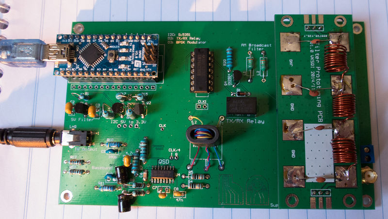

VK1ATP
Sysadmin for Money, Coding for fun!
These slides available at: https://github.com/pwarren/OpenRadio2017
© 2017 Paul Warren. CC-BY-SA.

Enter HAMlib
An easy to use library to interface with various radios
Abstracts out serial protocols
Testing tool comes with the package
rigctl -m 228 -r /dev/ttyUSB0 -s 9600 F 7090000
I know, I have an FT-817, I'll emulate that!
Got a bit of the way through
5 byte blocks
4 param bytes, one command byte
{0x00,0x70,0x90,0x00,0x01} tunes to 7 090 000 Hz
ergh: convert integer's to BCD
Some _days_ attempting to get BCD encoding/decoding to work
Thanks to VK5ZM
TS-430 protocol is much easier
37 chars
P1: 11 digits freqency in Hz
P2: 5 spaces
P3: 5 digit RIT Freq
P4: 1 digit RIT Status
P5: 1 digit XIT Status
P6: 0
P7: 2 digit Mem channel (00-99)
P8: 1 digit TX status
P9: 1 char Operating Mode
P10: 1 char FT/FR
P11: 1 char Scan Status
P12: 1 digit Simplex Status
P13: 1 digit OFF/Tone/CTCSS
P14: 2 digit Tone Number
P15: 1 space
TRM: ;
Character based
No more binary packing
No More BCD encoding/decoding!
Responses have variable length but terminations are easy: ';'
finished in a few hours
Code available at: https://github.com/darksidelemm/open_radio_miniconf_2015/tree/master/openradio_cat
Live Demo
I don't know!
PSK TX capabilities not easily done with ts-480 spec
Will have to come up with a another protocol
Implement in Arduino and C
It does what I want
I have a PortableSDR with me
Small, Portable, fully open SDR transciever
Hackaday contest finalist
Crowdfunded
I've hacked away on it too!
Now has an off switch
Many current limitations
Come over and help remove some!
/